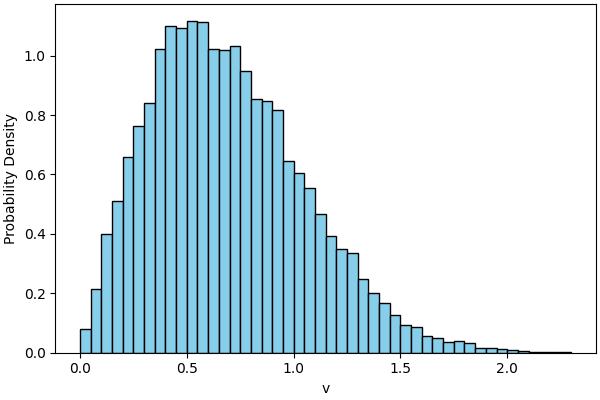
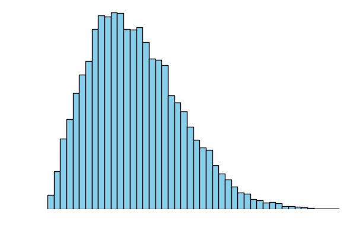
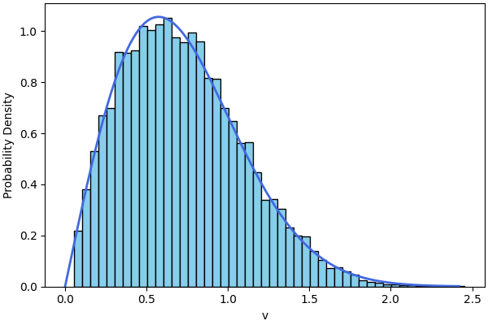
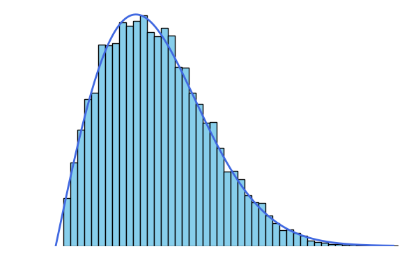
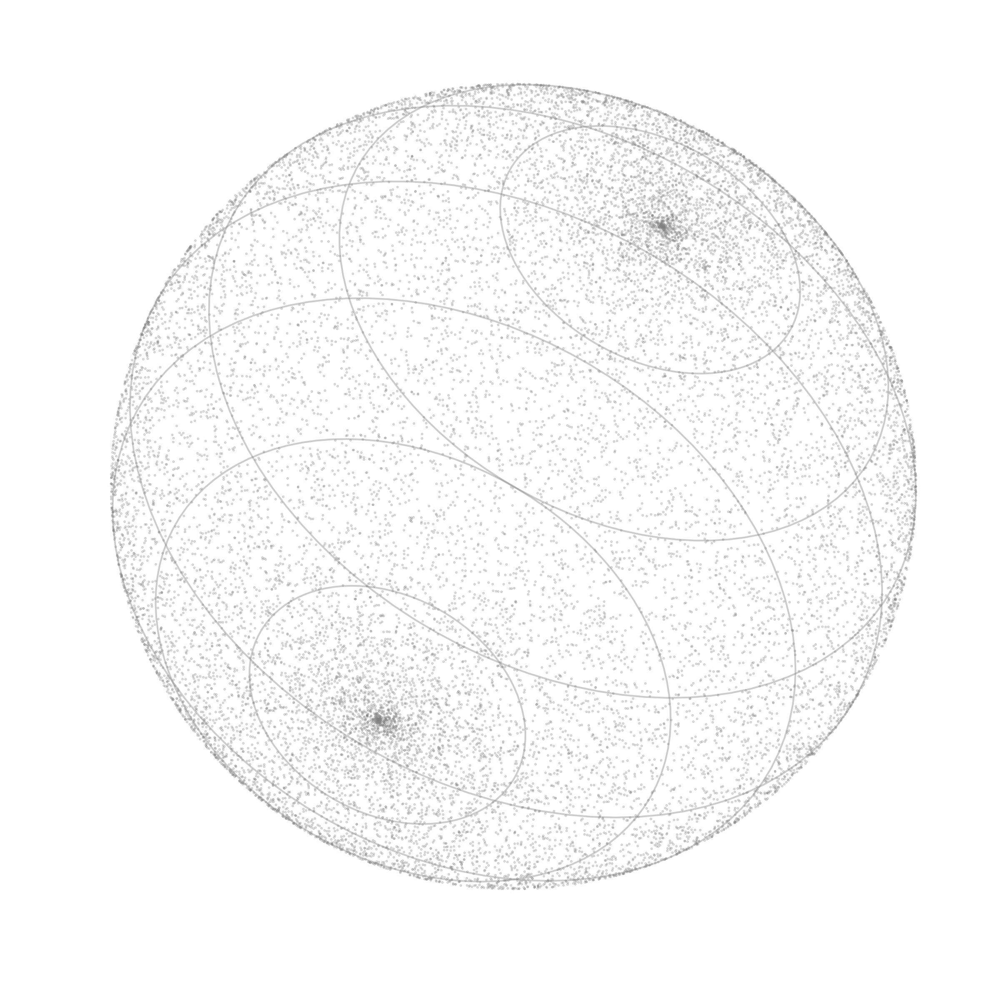
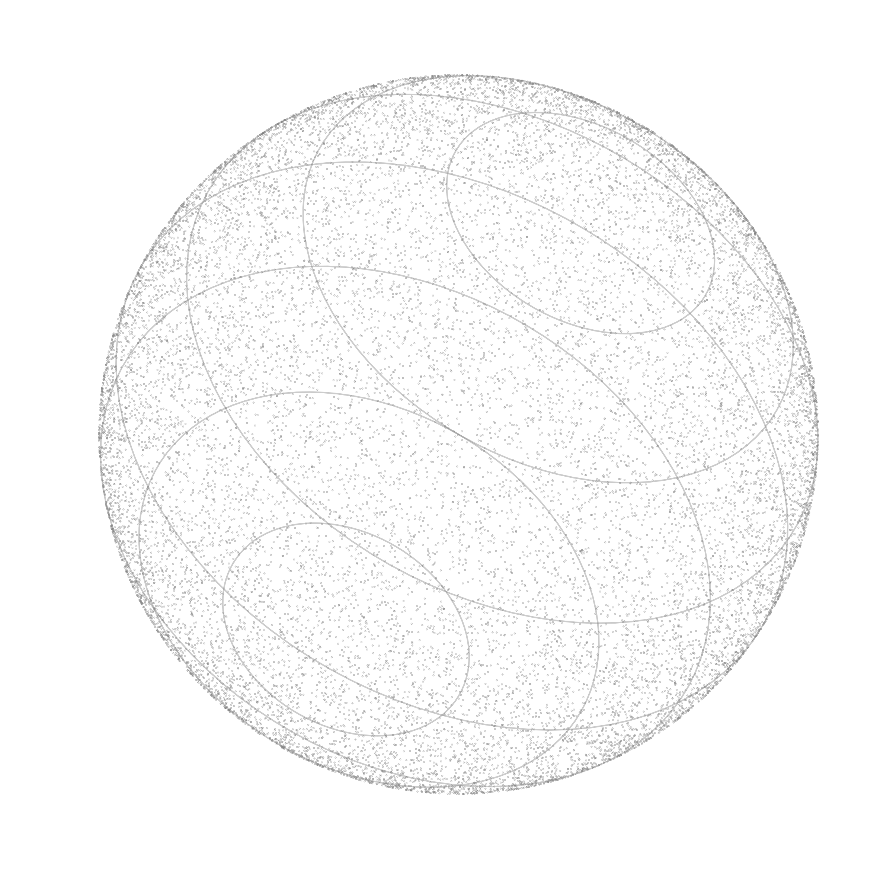

I was recently watching 3blue1brown's video on the properties of hyperspheres, and it reminded me of a classic problem from statistical mechanics: the distribution of speeds for particles in a gas. While they might seem unrelated at first, hyperspheres are actually a great tool for explaining why a system of particles behaves the way it does. I decided to revisit the derivation of the Maxwell-Boltzmann distribution, which at its heart comes down to a simple geometric realization: if you treat the velocities of every particle as a single point in a high-dimensional space, the conservation of energy forces that point to live on the surface of a hypersphere.
The animation above shows 64 identical particles on a grid, initialized with uniformly sampled velocities, colliding within a rigid box. These collisions are perfectly elastic, meaning that while individual particles exchange momentum and energy, the total kinetic energy of the system remains constant.
In this simulation, we handle two types of events: wall reflections and particle-to-particle collisions.
When a particle hits a wall, it simply mirrors its velocity. However, when two particles collide, they exchange momentum. For two particles with positions \(\vec{x_1}, \vec{x_2}\) and velocities \(\vec{v_1}, \vec{v_2}\), the post-collision velocity \(\vec{v_1^{\prime}}\) (and analogously \(\vec{v_2^{\prime}}\)) is given by the standard elastic collision formula:
$$\vec{v_1^{\prime}} = \vec{v_1} - \frac{\langle \vec{v_1} - \vec{v_2}, \vec{x_1} - \vec{x_2} \rangle}{\|\vec{x_1} - \vec{x_2}\|^2}(\vec{x_1} - \vec{x_2})$$Each interaction changes the individual velocity components \(v_x\) and \(v_y\) by a small amount \(\Delta v\). Because these changes are essentially random and independent, the Central Limit Theorem takes over, and the components eventually follow a Gaussian distribution.
However, while the velocity components are normal, the speed \(v = \sqrt{v_x^2 + v_y^2}\) follows a different distribution. The graph below, obtained from our simulation, shows this distribution in practice:


To find this distribution, we have to look at the geometry of the velocity space. As mentioned before, the total kinetic energy of the system is constant:
$$E_{kin} = \frac{1}{2}m(\vec{v_1}^2 + \cdots + \vec{v_N}^2)$$Each velocity has two components, therefore the squared velocity is \(\vec{v_i}^2 = v_{x,i}^2 + v_{y,i}^2\). We can rewrite the sum of all squared velocities as:
$$v_{x,0}^2 + v_{y,0}^2 + \cdots + v_{x,N}^2 + v_{y,N}^2 = \frac{2 E_{kin}}{m}$$On the left side of the equation, we have \(2N\) components. The right side is a constant. Therefore, we can view any set of valid velocities as a point on a \(2N\)-dimensional hypersphere with radius \(\sqrt\frac{2E_{kin}}{m}\).
As mentioned earlier, every velocity component \(v_i\) (let's drop the \(x\) and \(y\) indices and assume we have \(2N\) components) is a normally distributed random variable with variance \(\sigma^2\):
$$v_i \sim \mathcal{N}(0, \sigma^2)$$The variance \(\sigma^2\) of a random variable is given as:
$$\sigma^2 = E[v_i^2] - E[v_i]^2$$In our simulation, we sampled the initial velocity components from a uniform distribution between -1 and 1, so the expected value of each component \(E[v_i]\) is \(0\). That leaves us with \(\sigma^2\) equal to \(E[v_i^2]\). Thus, the variance is equal to the expected value of the squared velocity component. We can sum these expected values:
$$\sum_{i=1}^{2N} E[v_i^2] = 2N\sigma^2$$On the other hand, from the linearity of expectation, the same sum is equal to the square of the aforementioned (constant) radius of the hypersphere:
$$\sum_{i=1}^{2N} E[v_i^2] = E[\sum_{i=1}^{2N} v_i^2] = E[R^2] = R^2 = \frac{2 E_{kin}}{m}$$Now we have an explicit variance component \(\sigma^2 = \frac{2E_{kin}}{m \cdot 2N}\), which lets us write down the probability density function for the velocity components. There's also one more step that probably deserves its own derivation, but for now, we're going to take it for granted: the Equipartition Theorem. It states that in two-dimensional systems (with two independent degrees of freedom), the average kinetic energy is equal to \(k_BT\) - \(\frac{1}{2}k_BT\) per degree of freedom (where \(k_B\) is the Boltzmann constant and \(T\) is the temperature).
Since each velocity component is distributed normally \(v_i \sim \mathcal{N}(0, \sigma^2)\), we can write the probability density function (PDF) in the following way:
$$\begin{aligned} \pi(v_i) &= \frac{1}{\sqrt{2\pi}\sigma}\exp\left(-\frac{v_i^2}{2\sigma^2}\right) \\\\ &= \sqrt{\frac{m}{2\pi k_B T}}\exp\left(-\frac{1}{2}\frac{mv_i^2}{k_BT}\right) \end{aligned}$$From 1D to 2D probability density function
Now, it takes a little bit of work using tools from statistics and multivariable calculus to arrive at the PDF of \(\vec{v}\) in two dimensions. However, it's worth seeing the derivation step-by-step for completeness.
Because movement in the \(x\)-direction is completely independent of movement in the \(y\)-direction, the probability of a particle having a specific velocity vector \(\vec{v} = (v_x, v_y)\) is simply the product of their individual probability density functions:
$$P(v_x, v_y) = \pi(v_x) \cdot \pi(v_y)$$When we multiply these together, the constants multiply and the exponents add:
$$P(v_x, v_y) = \frac{m}{2\pi k_B T}\exp\left(-\frac{m(v_x^2 + v_y^2)}{2k_BT}\right)$$Now we want to find the one-dimensional PDF of a particle landing in a tiny box of velocity space. To get there, we multiply the density function by the area of that box \((dv_x, dv_y)\):
$$\text{Probability} = P(v_x, v_y) \, dv_x \, dv_y$$Next, we convert the Cartesian area element (\(dv_x \, dv_y\)) into a polar area element. In polar coordinates, an area element is defined by a tiny change in radius (\(dv\)) and a tiny change in angle (\(d\theta\)). The size of this area is \(v \, dv \, d\theta\). The \(v\) factor arises from the Jacobian of the coordinate transformation. Substituting the new area element into our probability equation:
$$\text{Probability} = \frac{m}{2\pi k_B T}\exp\left(-\frac{mv^2}{2k_BT}\right) v \, dv \, d\theta$$This equation describes the probability of a particle having a specific speed \(v\) and pointing in a specific direction \(\theta\). But we only care about the speed. To find the distribution of speed regardless of direction, we integrate over all possible angles from \(\theta = 0\) to \(2\pi\). This is called finding the marginal distribution:
$$\pi(v) \, dv = \int_{0}^{2\pi} \frac{m}{2\pi k_B T}\exp\left(-\frac{mv^2}{2k_BT}\right) v \, dv \, d\theta$$Since nothing inside the integral depends on \(\theta\) (the distribution is isotropic), we can pull the constants and the exponential out:
$$\begin{aligned} \pi(v) \, dv &= \frac{m}{2\pi k_B T} v \exp\left(-\frac{mv^2}{2k_BT}\right) dv \int_{0}^{2\pi} d\theta \\\\ &= \frac{m}{2\pi k_B T} v \exp\left(-\frac{mv^2}{2k_BT}\right) dv (2\pi) \\\\ &= \frac{mv}{k_BT}\exp\left(-\frac{mv^2}{2k_BT}\right) dv \end{aligned}$$Indeed, if we plot this resulting distribution, it matches the simulation data perfectly.


Sampling points on a hypersphere
Earlier, we stated that the velocity components \(v_i\) are distributed normally due to many independent, random interactions. While this is true, it is a somewhat hand-wavy assumption. Let's look at it from a different angle. Recall the equation stating that any set of legal velocities is a point on a \(2N\)-dimensional hypersphere with radius \(\sqrt\frac{2E_{kin}}{m}\):
$$v_{x,0}^2 + v_{y,0}^2 + \cdots + v_{x,N}^2 + v_{y,N}^2 = \frac{2 E_{kin}}{m}$$Since all configurations are equally likely, we can frame this as a sampling problem: how do we uniformly sample a point on a hypersphere?
It is usually helpful to start with a simpler case. Let's look at sampling points on a circle (the boundary of a disk). A straightforward method is using polar coordinates: sample the angle \(\theta\) uniformly from the interval \([0, 2\pi)\), then convert back to Cartesian coordinates: \(x = \cos(\theta), y = \sin(\theta)\).
However, this method doesn't extend easily to higher dimensions. For example, in three dimensions, naive sampling of angles causes points to cluster heavily around the poles. This happens because the surface area element \(dA = R^2 \sin(\theta) \, d\theta \, d\phi\) depends on \(\sin(\theta)\), which approaches zero at the poles. We can see the clustering in the image below.


We need to explore a slightly different approach. At first, it might look unrelated, but we're going to get there.
Sampling points on a hypersphere - properly
Let's start with the standard trick for evaluating the Gaussian integral. While there's a standard method to show it's equal to 1, our goal is to show the relationship between normally and uniformly distributed variables through a set of substitutions.
$$I = \int_{-\infty}^{+\infty} \frac{dx}{\sqrt{2\pi}}e^{-\frac{1}{2}x^2}$$$$I^2 = \left(\int_{-\infty}^{+\infty} \frac{dx}{\sqrt{2\pi}}e^{-\frac{1}{2}x^2}\right)^2$$We can substitute \(y\) for \(x\) in the second integral to treat them as independent coordinates:
$$\begin{aligned} I^2 &= \int_{-\infty}^{+\infty} \frac{dx}{\sqrt{2\pi}}e^{-\frac{1}{2}x^2}\int_{-\infty}^{+\infty} \frac{dy}{\sqrt{2\pi}}e^{-\frac{1}{2}y^2} \\\\ &= \int_{-\infty}^{+\infty} \frac{dx}{\sqrt{2\pi}}\int_{-\infty}^{+\infty} \frac{dy}{\sqrt{2\pi}}e^{-\frac{1}{2}(x^2+y^2)} \end{aligned}$$Next, we switch to polar coordinates using \(x^2 + y^2 = r^2\) and \(dxdy = r \, dr \, d\phi\):
$$I^2 = \int_{0}^{2\pi}\frac{d\phi}{2\pi}\int_{0}^{\infty} dr \, r e^{-\frac{1}{2}r^2}$$Now, let's substitute \(\psi = \frac{r^2}{2}\), so \(d\psi = r \, dr\):
$$I^2 = \int_{0}^{2\pi}\frac{d\phi}{2\pi}\int_{0}^{\infty} d\psi e^{-\psi}$$Finally, we perform the substitution \(\upsilon = e^{-\psi}\). This means \(\psi = -\ln\upsilon\) and \(-d\psi = \frac{d\upsilon}{\upsilon}\). Accounting for the flipped integration limits:
$$\begin{aligned} I^2 &= \int_{0}^{2\pi}\frac{d\phi}{2\pi}\int_{1}^{0} -d\upsilon \\\\ &= \int_{0}^{2\pi}\frac{d\phi}{2\pi}\int_{0}^{1} d\upsilon \end{aligned}$$We have arrived at two separate integrals where \(\phi\) is a uniform random number between 0 and \(2\pi\) and \(\upsilon\) is a uniform random number between 0 and 1. By walking back through these substitutions, we can generate normally distributed \(x\) and \(y\) (this is the Box-Muller transform1):
$$\begin{aligned} \psi &= -\ln\upsilon \\\\ r &= \sqrt{2\psi} \\\\ x &= r \cos\phi \\\\ y &= r \sin\phi \\\\ \end{aligned}$$The variable \(\phi \sim \text{Uniform}(0, 2\pi)\) represents an angle with no preferred direction. Because the magnitude component is derived from an independent \(\upsilon \sim \text{Uniform}(0, 1)\), the resulting vector \((x, y)\) lacks any angular bias. Since the joint probability density depends only on the radius \(r\), the distribution is, by definition, rotationally invariant.
It turns out that this rotational invariance extends to any number of dimensions. To sample points uniformly on a \(d\)-dimensional hypersphere, we simply generate a vector of \(d\) independent Gaussian variables and normalize them (divide the vector by its length).


So far, we have shown that normalizing a vector of independent normal variables uniformly samples a hypersphere. But is this the only way? If it weren't, velocity components wouldn't necessarily have to be normal.
However, the Herschel-Maxwell Theorem2 proves that if a random vector's distribution is rotationally invariant and its components are independent, then those components must be identically and normally distributed. I’ll leave the proof for another post.
Thermodynamical consequences
Our initial setup assumed an isolated system with a fixed number of particles, resulting in a constant total energy. In statistical mechanics, this setup is known as the microcanonical ensemble. There is also another framework, called the canonical ensemble, where the system is allowed to exchange energy with its surroundings, meaning the temperature is fixed, but the total energy can fluctuate. Geometrically, instead of just the surface, this corresponds to looking at the entire volume of a hypersphere for energies up to \(E\).
However, as Grant pointed out in his video, as the dimension \(d\) increases, the volume of a hypersphere of radius \(R\) becomes almost entirely concentrated near its surface. The ratio of the volume of a slightly smaller sphere of radius \(R-\epsilon\) to the volume of the original sphere quickly approaches zero:
$$\frac{V_d(R-\epsilon)}{V_d(R)} = \left(1-\frac{\epsilon}{R}\right)^d$$Because of this property, even without complex calculations, we can see that in the high-dimensional limit, these two setups: one strictly isolated with fixed energy, and the other exchanging energy at a fixed temperature, become physically indistinguishable.
We'll dive deeper into the canonical ensemble in the next post, where we'll build on today's Maxwell-Boltzmann derivation to find the distribution of energies.